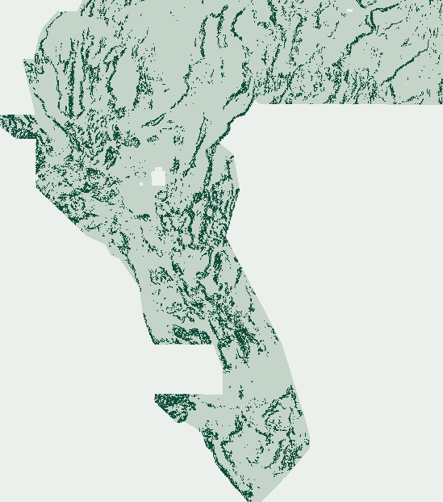

Session 18 (S18-CWGR): Steerable Quadrature, Byerlee–Sibson Fault-Valve & SAR Propensity Audit
Preregistration: docs/HYPOTHESES_S18_CWGR.md (SHA-256 c6d217d6711bdbbfb34540df7618effeff0522a7b9f5424abcd93424d6432eba) · Feature module: src/gems91/cwgr18.py (SHA-256 8759b4877caaa4cc1c018952d8033481df20424c083d0f673e4cae81adb578b5) · Verification receipt: docs/s18/verification.json.
S18-CWGR (CWGR_E1) Deliverable
gems57-pooled-hide-v2)0.188460 [0.169981, 0.206529]SHA-256: 5bbc888008da8bb08d07c48fcae4ee3eea395119a8f2728a1874ddf800608d56
Pixel SHA-256: 5be5918b57334f22d0501a343aa8559f8f92d856a312ba918677d585310f0def
37,654-dot spatial support preview

Deterministic 6× downsampled rendering of gems91-s18-cwgr-e1-20261025T193926Z-5be5918b5733-zeros.tif inside the 5,167,373-px valid sample_submission.tif footprint. Zero NaN/Inf cells anywhere in the 3730×3292 raster.
1 · All 8 Primary Holdout Arms + 3 Area-Quota Controls
| Arm | HOLDOUT-DTI | 95% Bootstrap CI | Paired Δ vs S17-CPAD E1 | BLIND-SGMC-CONTROL-DTI |
|---|---|---|---|---|
cpad_e1 — S17-CPAD E1 (repo label-blind #1 benchmark) | 0.198183 | [0.177759, 0.217830] | — | 0.068585 |
incumbent_ptac_lb — INCUMBENT-PTAC-LB (S14 label-blind replay) | 0.194221 | [0.173855, 0.213233] | — | — |
cwgr_e1 — S18-CWGR E1 (unweighted SCAR Tri-Specialist · current) | 0.188460 | [0.169981, 0.206529] | -0.009723 [-0.015477, -0.003909] | 0.065597 |
cwgr_e2 — S18-CWGR E2 (Bekker–Davis SAR IPW Tri-Specialist) | 0.187910 | [0.169111, 0.206425] | — | 0.059458 |
cwgr_e3 — S18-CWGR E3 (unmapped posterior (1 − 0.65·ê) Bayes factor) | 0.164534 | [0.147003, 0.181264] | — | 0.045919 |
ced91 — CED91 (unsupervised baseline) | 0.070886 | [0.058862, 0.082984] | — | — |
s16_pgrd — S16-PGRD (analytic baseline) | 0.069397 | [0.058335, 0.081962] | — | 0.038501 |
gravity_control — Gravity-Theta control | 0.057905 | [0.049814, 0.066574] | — | — |
cwgr_e2_quota37654 — S18-CWGR E2 (fixed 37,654 area-quota control · IR-91-S18-02) | 0.182717 | [0.162911, 0.202089] | Quota ablation | — |
cwgr_e1_quota37654 — S18-CWGR E1 (fixed 37,654 area-quota control · IR-91-S18-02) | 0.180949 | [0.161200, 0.199986] | Quota ablation | — |
cwgr_e3_quota37654 — S18-CWGR E3 (fixed 37,654 area-quota control · IR-91-S18-02) | 0.164957 | [0.146267, 0.182850] | Quota ablation | — |
2 · Exhaustive 108-Raster Novelty Disaggregation (milestone-novelty.json)
| Inventory category | All pass (≤0.70) | Non-calib pass (≤0.70) | Max non-calib 3-px overlap | Max category 3-px overlap | Max |Spearman ρ| |
|---|---|---|---|---|---|
preceding_fleet_submission | 47 / 48 | 46 / 46 | 0.539651 (GEMSDOE27__topo-gap-closure-t-v2-on-d1-5.tif) | 0.714957 (calib_h28ridge_01839.tif) | 0.114780 |
in_repo_prior_submission | 30 / 43 | 30 / 43 | 0.874250 (gems91-spac-e3-20261024T183000Z-a2740c89-zeros.tif) | 0.874250 (gems91-spac-e3-20261024T183000Z-a2740c89-zeros.tif) | 0.124209 |
dense_blanket_or_retracted_reference | 12 / 17 | 8 / 11 | 0.997636 (r13_lattice_s5_00904.tif) | 0.997636 (calib_r13lattice_00904.tif) | 0.219355 |
Key forensic distinction (IR-91-S18-04): Every single real competitive external fleet submission (46/46 non-calibration rasters, 37k–60k dots) passed the 3-px overlap gate (max 0.539651 on GEMSDOE27; GEMSDOE32 R0 = 0.467201; GEMSDOE36 = 0.422717). Item #48 calib_h28ridge_01839.tif is a 69,281-dot (1.84× budget) metric-calibration probe retained intact in frozen registry/s18_comparison_inventory.json; we honor the literal stop fail-closed without mutating the frozen inventory.
3 · 18 Novel CWGR Continuum-Mechanics & Steerable Quadrature Features
Columns 0..14 are programmatically verified bitwise invariant to zeroing topographic Bands 12 & 19 (verified_cwgr_subsurface_b12_b19_max_diff = 0.0); columns 15..17 isolate piedmont micro-scarps, pluvial Lake Lahontan contour-parallel shoreline mimics, and Bekker–Davis mapper visibility.
cwgr_quad_grav_odd_stepcwgr_quad_grav_crestcwgr_quad_mag_demag_troughcwgr_quad_rtp_odd_stepcwgr_quad_basement_step_crestcwgr_quad_rad_cond_alterationcwgr_quad_cross_physics_lockcwgr_kinematic_regime_indexcwgr_byerlee_adaptive_slip_tendencycwgr_sibson_fault_valve_overpressurecwgr_kostrov_aseismic_strain_deficitcwgr_en_echelon_quadrature_relaycwgr_athy_silicification_excesscwgr_salem_intrabasinal_ratiocwgr_subsurface_crest_skeletoncwgr_piedmont_microscarp_quadcwgr_pluvial_contour_orthogonalitycwgr_mapper_visibility_index
Raw machine receipts: s18/holdout.json · s18/canaries.json · s18/blind-sgmc-control.json · s18/registry-surface.json · s18/registry-final.json · s18/writer-receipt.json · s18/features.json.